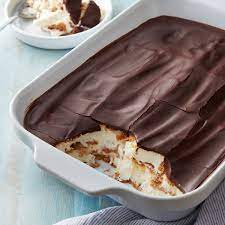

Chocolate Eclair Cake

Derscription
My favorite person in the world, my second mom Patty, gave me this easy and delicious recipe. Its the best.
Ingredients
- 1 (16 ounce) package graham crackers
- 2 (3.5 ounce) packages instant vanilla pudding mix
- 4 cups milk
- 1 (16 ounce) package frozen whipped topping, thawed
- 1 (16 ounce) package prepared chocolate frosting
Steps
- Line the bottom of a 9x13 inch baking pan with graham crackers. In a large bowl, combine the milk and vanilla pudding according to directions on box. Fold in the whipped topping. Spread a layer of the pudding mixture over the graham crackers. Alternate the graham cracker and pudding layers up to the top of the pan. Cook the container of prepared frosting, uncovered in the microwave for 1 minute on half power. Pour over the top of the cake. Refrigerate for at least 12 hours before serving.